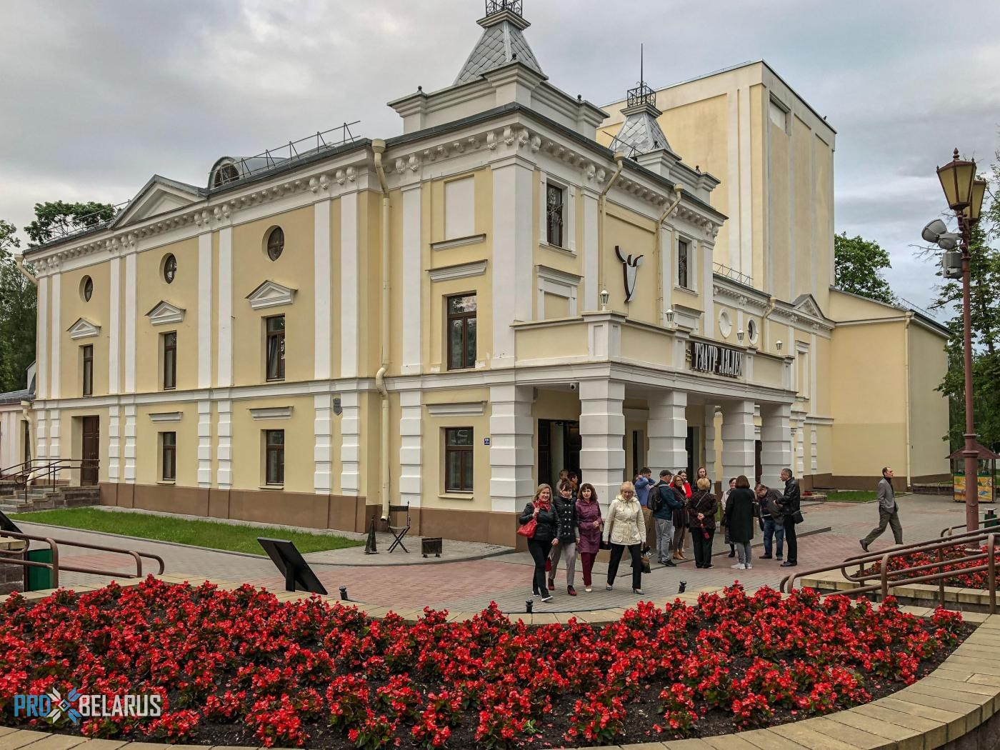
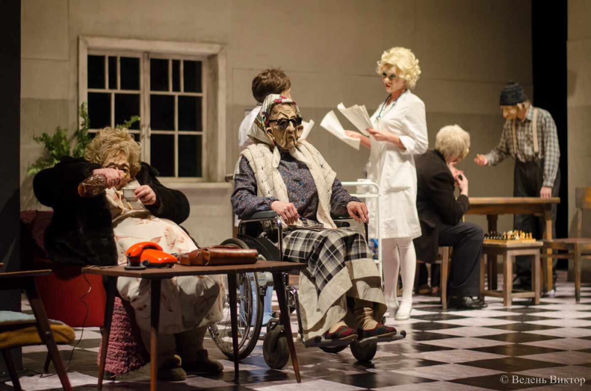

.
Кукольный театр в Гомеле

Театр был создан в 1968 году из группы кукольников, которая с 1963 по 1968
годы существовала при Гомельском областном драматическом театре. В 1968
году театр получил статус самостоятельного юридического лица - Гомельского
государственного театра кукол. Основателем театра, его первым директором и
режиссером был Виктор Сергеевич Черняев. Приглашение на постановки опытных
художников (заслуженного деятеля искусств БССР Б.Звенигородского,
А.Фоминой, Л.Быкова и др.) дало возможность поднять на соответствующий
профессиональный уровень сценографическую культуру постановок. И это при
том, что коллектив не имел своей стационарной базы и по сути являлся
разъездным. В 1986 году главным режиссером театра становится Заслуженный
артист Республики Беларусь - Владимир Борисович Матрос, который проработал
на этом посту до 2006 года. Главным художником театра работал Заслуженный
деятель искусств Северо-Осетинской АССР - Александр Чеботарев. Некоторые
спектакли, поставленные В.Черняевым и В.Матросом, до сих пор с успехом
идут в театре. Среди них: "Сказка - ложь, да в ней намек…" (А.Пушкин),
"Осторожно, Коза!" (Р.Качанов), "День Кутясика и Кутилки" (Й.Пегр), "Я -
цыпленок, ты - цыпленок" (Е.Чеповецкий). Решением Гомельского горисполкома
в сентябре 2002 года театру было передано здание дворца культуры по улице
Пушкина, 14. В марте 2004 года открыт зрительский комплекс театра со
стационаром на 214 мест. С февраля по декабрь 2007 года была проведена
полная реконструкция здания театра. У входа в театр установлены скульптуры
персонажей из сказки А.Толстого "Приключения Буратино".

Летом 2021 года был проведен ремонт зрительного зала. Новый зрительный зал
оборудован креслами-трансформерами, позволяющими маленьким зрителям
комфортно чувствовать себя при просмотре спектаклей. Также обновлено
звуковое и световое оборудование зрительного зала. Гастрольно-фестивальная
география театра охватывает пространство от Атлантического побережья
Испании до Тихоокеанского побережья Владивостока, от столицы республики
Коми до острова Цейлон. Театр много гастролирует и участвует в
Международных театральных фестивалях. Так, тесные творческие связи
установлены с театрами кукол Республики Беларусь, с театрами городов
Российской Федерации - Москва, Брянск, Курск, Калининград, Липецк, Самара,
Белгород, Санкт-Петербург, Владимир, Воркута, Тамбов, Казань, Набережные
Челны и другие; с театрами городов из Украины: Киев, Днепр, Чернигов,
Львов, Кропивницкий; а также с театрами городов Лиепая (Латвия), Душанбе
(Таджикистан), Астана, Алма-Ата, Актобе (Республика Казахстан). Театр
неоднократно становился Лауреатом и Дипломантом различных Международных
театральных фестивалей Беларуси, России, Украины, Казахстана,
Таджикистана, Латвии, Италии, Испании, Словакии, Германии, Индии,
Шри-Ланки и других стран. В текущем и перспективном репертуаре театра
большинство спектаклей для детей, но с 2000 года в репертуаре театра
появились и постановки для молодежи и взрослых. Это спектакли по
произведениям белорусских классиков - Я.Купалы, классиков российской и
мировой литературы - А.Чехова, М.Булгакова, Ф.Достоевского, И.Эренбурга,
Ш.Алейхема, Г.Ибсена, Ж.Ануя, Ж.Б.Мольера, Дж.Сэлинджера, Ж.Лафонтена,
В.Буша и др. Ежегодно театром показывается около 300 спектаклей, и за его
почти 60-летнюю историю спектакли театра посмотрели более 4-х миллионов
зрителей.